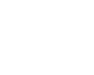

春分 | 春风十里不如你
春分，春风十里不如你
春分后，气候温和，雨水充沛，辽阔的大地上，岸柳青青，莺飞草长，小麦拔节。农谚有云：春分麦起身，一刻值千金。那么就从今天起，让我们更加阳光地面对生活，告别感伤，不负春光。
吹皱一池春水，我与诗歌赋有个约会
天将小雨交春半，谁见枝头花历乱。纵目天涯，浅黛春山处处纱。
焦人不过轻寒恼，问卜怕听情未了。许是今生，误把前生草踏青。
春分雨脚落声微，柳岸斜风带客归。时令北方偏向晚，可知早有绿腰肥。
杨柳青青，草长莺飞，桃红李白迎春黄。
已过春分春欲去。千炬花间，作意留春住。一曲清歌无误顾。绕梁馀韵归何处。尽日劝春春不语。红气蒸霞，且看桃千树。才谈更五鼓。剩看走笔挥风雨。春日迟迟，卉木萋萋。仓庚喈喈，采蘩祁祁。
2017年3月20日 18时29分，春分。一起感受春的气息。


